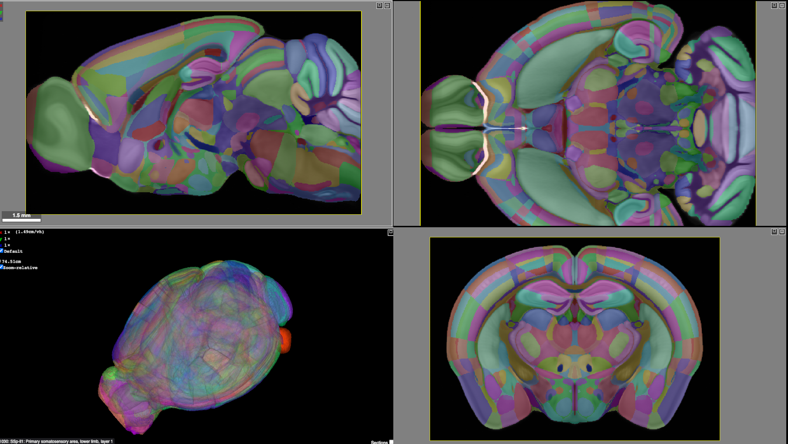
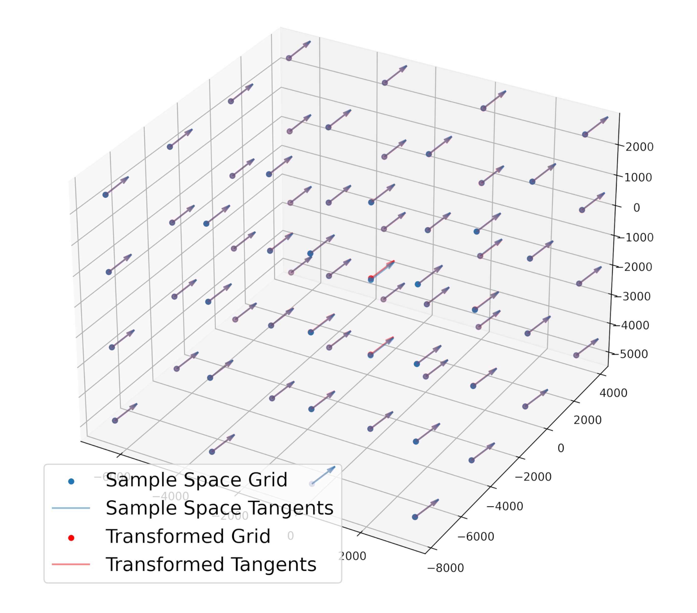

class:inverse ### Shape Analysis Group Meeting Thomas L. Athey October 3, 2022 <br><br> <img src="../../images/funding/jhu_bme_blue.jpg" STYLE="width:100%;"/> <!-- <img src="../images/funding/KNDI.png" STYLE="HEIGHT:95px;"/> --> <br> --- class:inverse ### Accessible technologies for high-throughput, whole-brain reconstructions of molecularly characterized mammalian neurons <br> <div class="small-container"> <img src="../../faces/mim.jpg"/> <div class="centered">Michael Miller</div> </div> <div class="small-container"> <img src="../../faces/jovo.png"/> <div class="centered">Joshua Vogelstein</div> </div> <div class="small-container"> <img src="../../faces/uli.jpg"/> <div class="centered">Ulrich Mueller</div> </div> <div class="small-container"> <img src="../../faces/dtward.jpg"/> <div class="centered">Daniel Tward</div> </div> --- class:inverse ### Goal: Catalog Neuron Types <img src="images/biccn.png" STYLE="width:100%;" class="center"/> --- class:inverse ### Data: Whole Brain Images with Some Fluoresecent Neurons <img src="images/data.png" STYLE="width:100%;" class="center"/> --- class:inverse ### Neurons Are Traced for Analysis <img src="images/axons.png" STYLE="width:100%;" class="center"/> Digital traces are a collection of knots (points) with connections. --- class:inverse ### Registration Brings Many Brain Samples Together $$ \min_{v:\dot \phi_t = v_t(\phi_t)} \left( \int_0^1 ||v_t||_V^2 dt + ||I_0 \circ \phi^{-1} - I_1||^2 \right) $$ <font size="-1">Beg, Miller, Trouvé, Younes, 2005. </font> $I_1$: previous slide $I_0$: Allen Reference Atlas <div class="row"> <div class="column"> <img src="images/atlas_im.png" STYLE="width:100%;" class="center"/> </div> <div class="column">  </div> </div> <a href="https://cloudreg.neurodata.io/">CloudReg: Chandrashekhar et. al., 2021.</a> --- class:inverse ### How to Map Neuron Traces to Atlas Space? $$ c: [0,L] \rightarrow \mathbb{R}^3 $$ $$ \phi: \mathbb{R}^3 \rightarrow \mathbb{R}^3 $$ My goal, numerical algorithms for: $$\phi \circ c: [0,L] \rightarrow \mathbb{R}^3$$ --- class:inverse ### Action of Diffeomorphism on Discretized Neuron Traced - Identity does not change curve - Composition acts successively "k'th order discrete mapping" --- class:inverse ### Advantage 1 of Higher Order Mapping Asymptotic error at knots (Taylor's Theorem) --- class:inverse ### Advantage 2 of Higher Order Mapping ##### Error Bounds From FTC: FTC again: --- class:inverse ### Simulated Piecewise Linear Curves <img src="images/toy1.png" STYLE="width:75%;" class="center"/> --- class:inverse ### Simulated Sampled Curves --- class:inverse ### Real Data <img src="images/mapping-fig-300dpi.jpg" STYLE="width:85%;" class="center"/> --- class:inverse ### First Order Mapping Hurts Here --- class:inverse ### But It Helps When Traces are Downsampled --- class:inverse ### Possible Explanation Scale of Neuron Trace Segments << Scale of Registration Nonlinearity  But derivatives retain information about missing points when downsampled. --- class:inverse ### Thank you!!